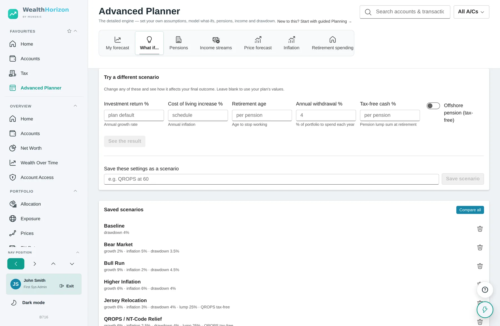
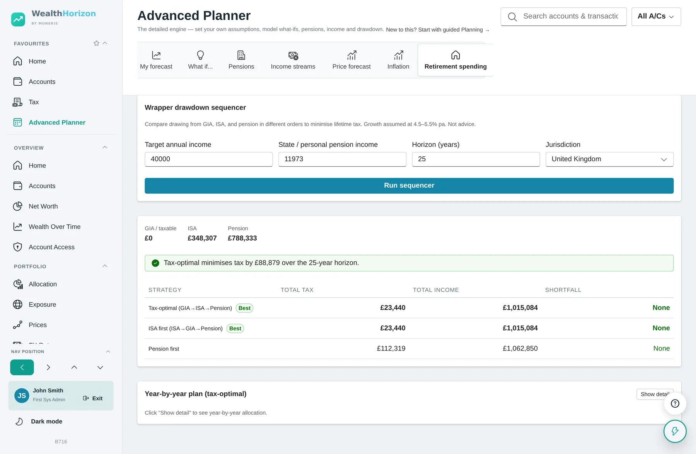
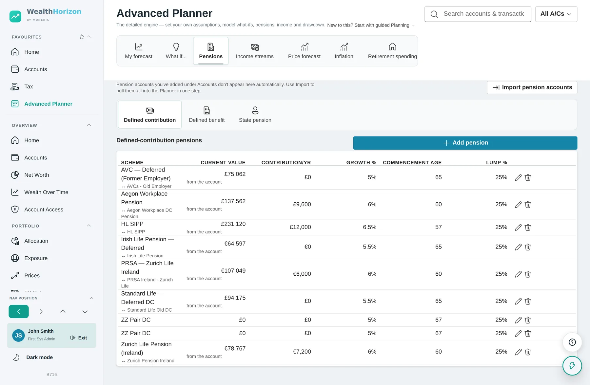
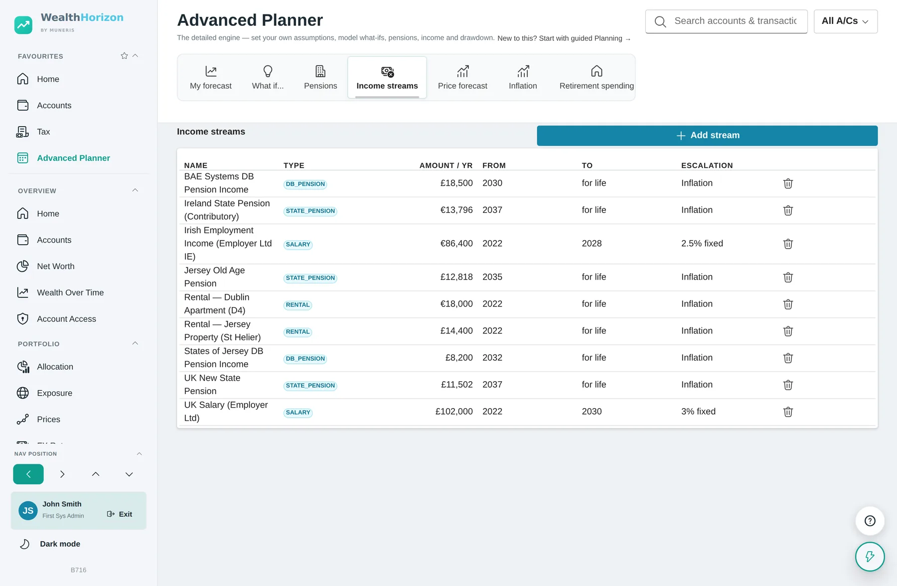
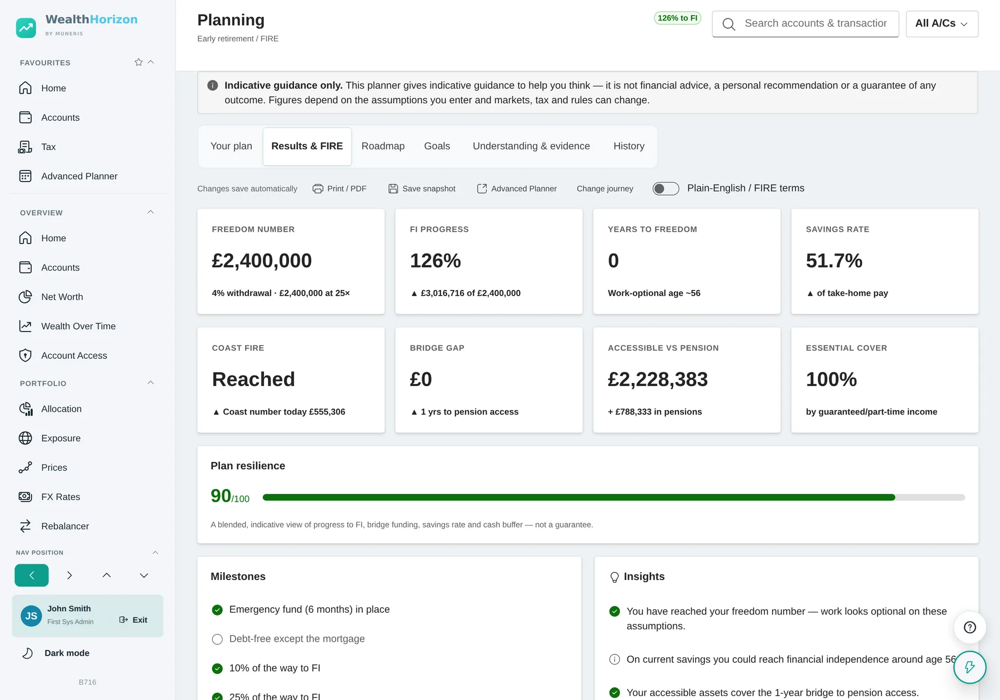
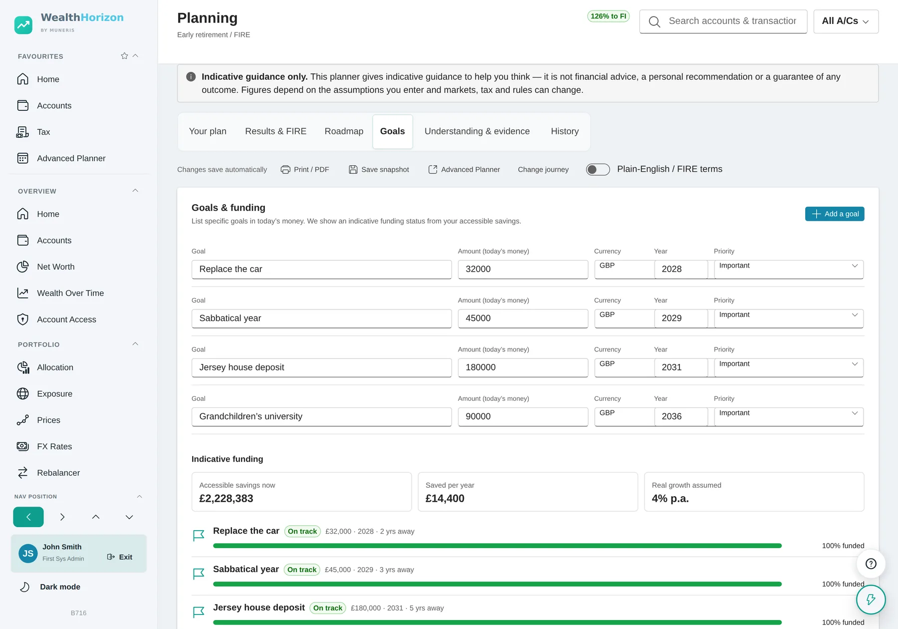
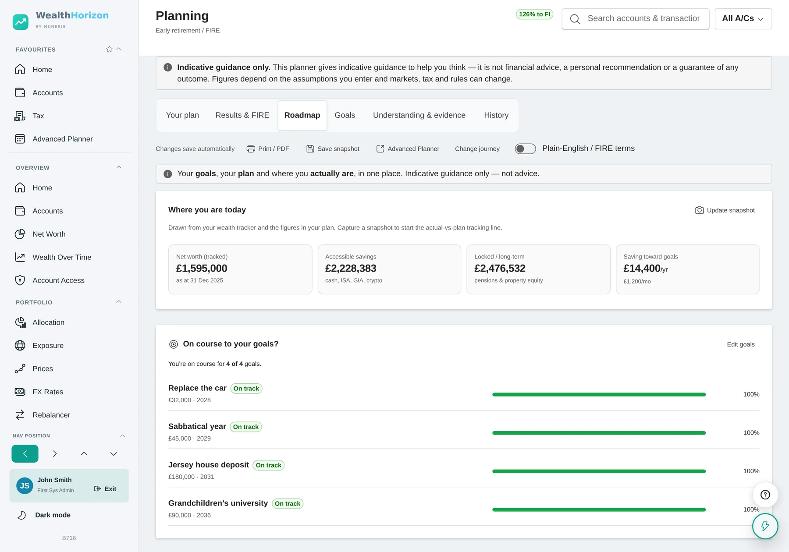
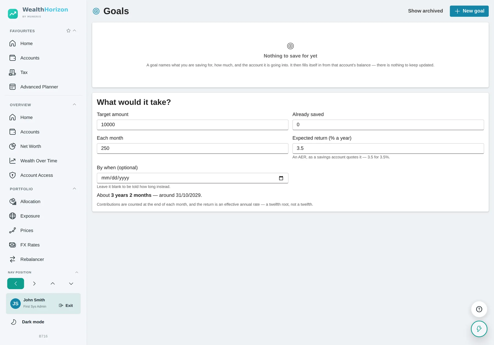

Planning and retirement
Will there be enough, and when?
Your accounts tell you what you have now. They do not tell you whether it will last. WealthHorizon has three tools for that. The pension calculator asks two questions. The guided planner asks more, but only the ones that apply to you. The advanced planner lets you set everything yourself. They all work on the same plan, so you never enter anything twice. All three are in Pro.
Every screen on this page is the running application with a demonstration household loaded. The figures are that household’s, and they are fictitious.
Two questions
When do you want to stop work, and how much of the pot do you want as tax-free cash? It uses the pensions already on your account, so there is nothing to type in. You get a monthly figure back straight away.
Use this when you just want a number.
Start guided
You pick the kind of plan you are making and answer the questions. It fills in what it can from your accounts first, so most of the time you are checking a figure rather than looking it up.
Use this when you are not yet sure what matters.
Set everything yourself
Growth rate, inflation, retirement age, which pot you spend first, each pension and when it starts, each income stream and when it stops. You set all of it.
Use this when you know what you want to change and want to watch it move.
It is all one plan. Answer the guided questions and the Advanced Planner button takes your answers with you. Build a plan by hand and the guided results read from that. The calculator uses the same pensions, and has a button on it to move up to the full fact-find. You only ever enter something once.
The pension calculator
Two questions, answered from your own pensions
Before you build a plan you usually just want one number: how much would I have to live on? Tax & Planning → Pension Calculator asks when you want to stop work and how much of the pot you want as tax-free cash. It reads everything else from the pensions on your account.

What it answers
The big figure is what you would have a month. That is what your pot can pay out every year until you are 90, on top of any pension already being paid. If a scheme or the state pension starts after you stop work, you get two figures: one for when you retire, one for when everything has started. Next to them are the tax-free cash and the pot, before and after that cash comes out.
Year by year shows the same thing as a chart. Guaranteed income is the bottom band. The pot sits on top of it. The dashed line is the pot running down. Stop later and the line starts higher and runs for fewer years. Take more cash and it starts lower. A screen reader gets the same thing described in words.
Check what it used. Where it comes from lists every pot and every guaranteed income behind the figure. If a pension is not on that list, it is not in the answer. The one people leave out most often is the state pension, which is usually the biggest guaranteed income they will ever have. The page can only count it if you have recorded it in the planner.
There are two limits on tax-free cash
The first is a share of the pot: a quarter in the UK and Ireland, 30% of an approved scheme in Jersey. The second is a cash ceiling on top of that, £268,275 in the UK and €200,000 in Ireland. That ceiling covers every pension you hold, not each one separately, so four pensions do not give you four ceilings. If the ceiling is what decides your figure, the page tells you underneath it.
Before tax and after it
All the figures are in today’s money. If the tax bands for that country are held in your currency, the monthly figure is after income tax. It taxes the pension income only, not any earnings, savings interest or dividends you might also have. The before-tax figure sits underneath, because that is the one your pension statements show. If it cannot apply the bands it says before tax and takes nothing off.
More than one country
If you have pensions in more than one country, the Rules selector shows what each country would allow, and the top of the slider moves with it. Use it to compare. It is not a choice you get to make: which rules apply depends on where the pension is and where you live. Take advice if a pension crosses a border.
The guided planner
Six starting points, and only the questions that apply
Most planning tools open with a blank form and ask for your retirement age. That is a hard question to start with. This one asks what kind of plan you are making first, then changes the questions to suit.


It asks only what applies to you
The questions are conditional. No children, and it never asks about school fees. Children over eighteen, and it asks about university support instead. Say you have no investments and the detailed investment questions do not appear at all.
It fills in what it already knows
Your cash, ISA, general investment account, pensions, crypto and property figures come from the accounts you already keep, and so do your state and defined-benefit pensions, your salary, your contributions and your age. You check and adjust them instead of digging out statements. They also stay right, because they came from your accounts.
The health and burnout questions are optional
How long you live and whether you need care make a big difference to a plan, so it asks. Answer only if you want to. If you share your plan with an adviser they can see these answers, and the page tells you that before you answer, not after.
The advanced planner
You set all the assumptions
The same calculations, with nothing decided for you. Build as many plans as you like, name them, save them as files and compare them.

Tell it what you plan to spend. With no target it just takes a fixed percentage of the pot each year. That shows you growth, but it can never tell you when the money runs out. Put in a target spend and it works out how much of that your guaranteed income covers — state pension, defined benefit, earnings — then draws the rest from the pot, with enough extra to cover the tax. It tells you the first year you fall short, when the pension runs out, when everything you can reach runs out, and what is left at the end.



How you take a pension changes the tax, and nothing else. You choose per pension. Tax-free cash, then drawdown takes the quarter in one go when you retire, then taxes everything after that. A series of lump sums leaves the pot where it is and makes a quarter of each withdrawal tax free instead, until you reach the tax-free cash ceiling. Either way you use up the same ceiling.
Once you take taxed money out, you can put less back in. Taking the taxed part of a pension caps what you can pay into any pension after that. In the UK the cap is £10,000 a year. The plan starts applying it the year after your first taxed withdrawal, scales every pot’s contributions down to fit, and tells you what it could not pay in over the life of the plan. Taking tax-free cash on its own does not trigger it, and neither does a defined-benefit pension starting to pay. Jersey and Ireland set no cap, so there you are told when the trigger happens but nothing is capped.

FIRE
What you need, and how you get through the gap
Pick a FIRE journey and the planner adds the measures people in FIRE actually use. It also adds the one most tools leave out: how you live between stopping work and being allowed to touch a pension.

- Freedom numberThe capital that makes work optional, at the withdrawal rate you chose rather than a rate the tool picked. Shown as both the figure and the multiple of spending it represents.
- FI progressWhat you have against what you need, as a percentage. Past 100% it keeps counting, so you can see how far past you are.
- Years to freedomAnd the work-optional age that follows from it, on your current savings rate.
- Savings rateOf take-home pay. It counts your pension contributions and your employer’s as well as what reaches a savings account. Leaving the pension out makes this number look better than it is.
- Coast FIREWhether what you already hold will grow into the freedom number without another contribution, and the coast number as it stands today.
- Bridge gapThe one most tools skip. Stop work at 52 and you cannot touch a pension until 57 or 58. This tells you how many years that is and how much money it needs, counting only what you can actually reach.
- Essential coverHow much of your essential spending your guaranteed income covers on its own. That is a different question from whether the pot is big enough, and usually an easier one to answer.
- Lifestyle ladderLean, Base and Fat budgets side by side, so you can see how the number changes with how you want to live.
- Plan resilienceA rough score across progress, bridge funding, savings rate and cash buffer. Treat it as a nudge to go and look at something, not a target to push up.
- MilestonesEmergency fund in place, debt-free except the mortgage, a tenth of the way, a quarter. A twenty-year job is easier with steps in it.
There is a plain-English / adviser-terms switch at the top of the page. It labels the same figures either the way the FIRE community says them or the way a suitability report has to. The figures themselves do not change.
Goals, and tracking against them
What you are saving for, and whether you will get there
Writing a goal down is easy. Knowing whether you will reach it is not. These are funded from the money you actually have, in date order, and the answer changes when your accounts change.

In today’s money, on purpose
You put in what it costs today. The tool adds inflation up to the target year. Doing that in your head is where these estimates usually go wrong.
Priority decides what gives
Must-have, important, nice-to-have. When there is not enough to go round, a must-have that looks short gets flagged rather than quietly pushed to the back, and the nice-to-haves are what it offers to trim.
It says what it ignores
It does not model tax, currency conversion or borrowing. It is there to help you decide what comes first, and the page says so.

Plan against actual
Capture a snapshot and the roadmap starts a second line: where the plan said you would be by now, against where you actually are. That is how you find out early that a plan has drifted.
Four ways to close a gap
If a goal is short you get numbers rather than encouragement. Save this much more a month. Delay it by this long. Trim it to what you can afford. Or move the must-haves to the front.
Accessible or locked
Every figure separates what you can reach from what you cannot. A deposit you need in three years cannot come out of a pension, so a total that mixes the two is no use to you.

What a projection is
None of this is advice
Everything here is a projection based on what you entered. Markets move and tax rules change. The further out the line goes, the less it means. There is a banner saying so at the top of the planner, not in small print at the bottom.
Some answers come down to judgement rather than arithmetic. The judgement is yours, and the tool shows its working. Take the order you spend your pots in. The usual order is cash, then investments, then ISAs, then pensions. But if unused pension money would be caught by inheritance tax and the rest would not, spending the pension first can work out better. WealthHorizon will model either and tell you what each costs. It will not tell you which to pick. If your position crosses a border, get advice.
The Monte Carlo simulation is there for the same reason. One line looks more precise than it really is. A range of outcomes is closer to the truth.